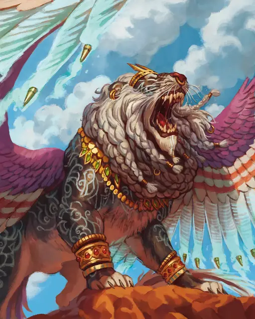

Сфинкс доблести
Sphinx of Valor
Большой Небожитель, Принципиальный Нейтральный

Класс Защиты 17 Инициатива +12 (22)
Хиты 199 (19к10 + 95)
Скорость 40 футов, Полёта 60 футов
| мод | спас | ||
|---|---|---|---|
| СИЛ | 22 | +6 | +6 |
| ЛОВ | 10 | +0 | +6 |
| ТЕЛ | 20 | +5 | +11 |
| мод | спас | ||
|---|---|---|---|
| ИНТ | 16 | +3 | +9 |
| МДР | 23 | +6 | +12 |
| ХАР | 18 | +4 | +4 |
Сопротивление урону Излучение, Некротический
Иммунитеты Психический; Испуганный, Очарованный
Чувства пассивное Восприятие 22, Истинное зрение 120 футов
Языки Общий, Небесный
Опасность 17 (18 000 опыта или 20 000 опыта в Логове; БВ +6)
Особенности
Непостижимость. Посредством магии невозможно удалённо наблюдать за сфинксом или прочитать его мысли без его разрешения. Проверки Мудрости (Проницательность) для выяснения его намерений или искренности совершаются с Помехой.
Легендарное сопротивление (3/день, или 4/день в Логове). Если сфинкс проваливает спасбросок, он вместо этого может в нём преуспеть.
Действия
Мультиатака. Сфинкс совершает две атаки Когтями и использует Рык.
Когти. Бросок рукопашной атаки: +12, досягаемость 5 фт. Попадание: 20 (4к6 + 6) Рубящего урона.
Рык (3/день). Сфинкс издаёт магический рык. Каждый раз, когда сфинкс рычит, его рык оказывает новый эффект в порядке от первого к третьему (очерёдность сбрасывается по завершении сфинксом Долгого отдыха).
1. Первый рык. Спасбросок Мудрости: Сл 20, каждый враг в 500-футовой Эманации, исходящей от сфинкса. Провал: Цель Испугана на 1 минуту.
2. Второй рык. Спасбросок Мудрости: Сл 20, каждый враг в 500-футовой Эманации, исходящей от сфинкса. Провал: Цель Парализована и повторяет спасбросок в конце каждого своего хода, оканчивая этот эффект при успехе. Спустя 1 минуту цель автоматически преуспевает в спасброске.
3. Третий рык. Спасбросок Телосложения: Сл 20, каждый враг в 500-футовой Эманации, исходящей от сфинкса. Провал: 44 (8к10) урона Звуком, и цель Опрокидывается. Успех: Только половина урона.
Сотворение заклинаний. Сфинкс доблести сотворяет одно из следующих заклинаний, не нуждаясь в Материальных компонентах (заклинательная характеристика — Мудрость, Сл спасброска заклинаний 20):
Неограниченно: Обнаружение добра и зла, Чудотворство
1/день каждое: Высшее восстановление, Область истины, Обнаружение магии, Пир героев, Рассеивание магии
Легендарные действия
У этого существа есть 3 использования Легендарных действий (или 4 использования в его Логове); оно может немедленно после окончания хода другого существа потратить одно использование, чтобы совершить одно из следующих действий. Существо восполняет все потраченные использования в начале каждого своего хода.
Волшебный рыск. Сфинкс телепортируется в видимое им незанятное пространство в пределах 30 футов и совершает одну атаку Когтями.
Бремя лет. Спасбросок Телосложения: Сл 16, одно видимое сфинксом существо в 120 футах. Провал: Цель получает 1 уровень Истощения. Пока у цели есть уровни Истощения, она выглядит на 3к10 лет старше. Провал или успех: Сфинкс не может совершить это действие повторно до начала своего следующего хода.
Бонус мастерства +6
Среда обитания Пустыня, Верхние планы
Сокровища Магические
Сфинксы
Собиратели и хранители секретов
Сфинксы оберегают тайны мультивселенной. Возникающие из духов исследователей и мудрецов, сфинксы понимают силу истины и важность её сохранения. Своей мудростью они делятся лишь с теми, кто докажет собственную рассудительность или преуспеет в испытании достоинства — будь то в решении загадок или схватках с опасными тварями. На протяжении своей жизни сфинксы способны менять обличье по мере того, как постигают всё более тонкие грани космических загадок.
Сфинксы доблести стоят на страже тайн, способных изменить или подвергнуть опасности само мироздание: обрётших форму чудовищных истин, смертоносных артефактов и даже того, чему вовсе не следовало бы существовать. Они обитают в сокрытых, пронизанных магией местах и ставят свой долг превыше жизни смертных. Если сфинксу доблести грозит опасность, он защищает свои владения магически усиленным рыком и яростными ударами.
Логова сфинксов
Обычно сфинксы обитают в местах великого знания или пророческой магии.
Местность, в которой находится логово сфинкса знаний или доблести, изменяется из-за его присутствия, создавая следующие эффекты:
• Дальновидение. Пока сфинкс находится в логове, он может сотворять заклинание Подсматривание, не нуждаясь в компонентах (заклинательная характеристика — та же, что для его действия Сотворение заклинаний). При сотворении заклинания таким образом его дистанция равна 1 миле.
• Насыщение знаниями. Каждый раз, когда сфинкс или один из его союзников в пределах 1 мили от логова совершает действие Изучение, они добавляют 1к6 к любой проверке характеристики, совершаемой для этого действия.
Если сфинкс умирает или перемещает своё логово в другое место, все эти эффекты мгновенно исчезают.